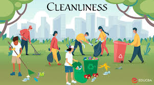
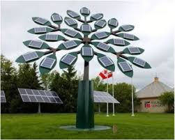

A cleaner city, free from litter, pollution, and clutter, creates a positive atmosphere that can lead to several mental health benefits such as: Reduced Stress Levels: A clean city promotes a sense of calm and relaxation. In our hasty modern lives, the state of our environment plays a crucial role in shaping our mental well-being. The impact of living in a cleaner city goes far beyond aesthetic appeal and environmental sustainability. Numerous studies have shown a strong correlation between urban cleanliness and improved mental health among residents.
Energy conservation for clean cities
3-D printed Solar trees
How they work
Findings prove the importance of prioritizing cleanliness and sustainability as it can lead to a smarter, healthier, and more productive urban population.
Their striking and varied designs are attention-grabbers. This makes solar trees effective at showcasing and thereby educating people about solar energy.

These systems provide shade and power lighting, portable electronic device charging, and even built-in television screens in come cases.